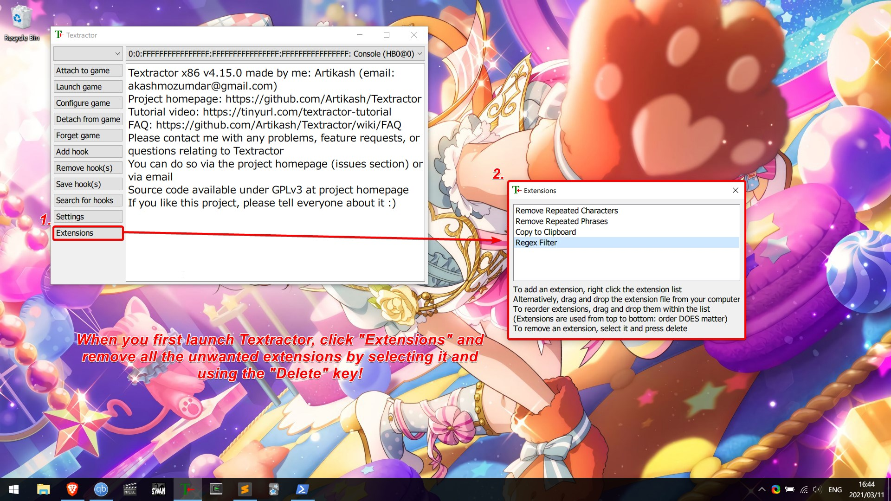
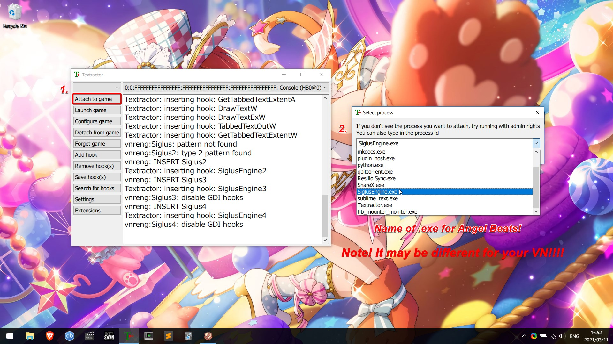
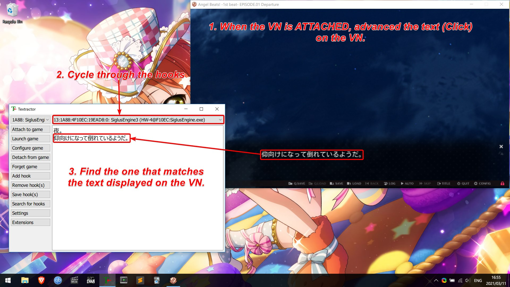
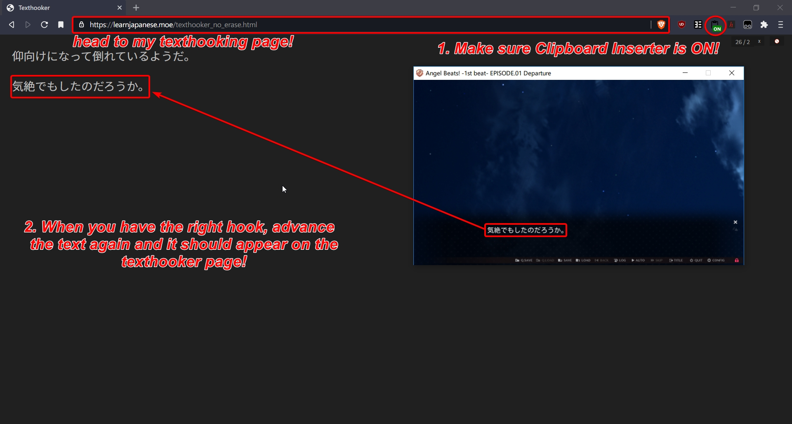
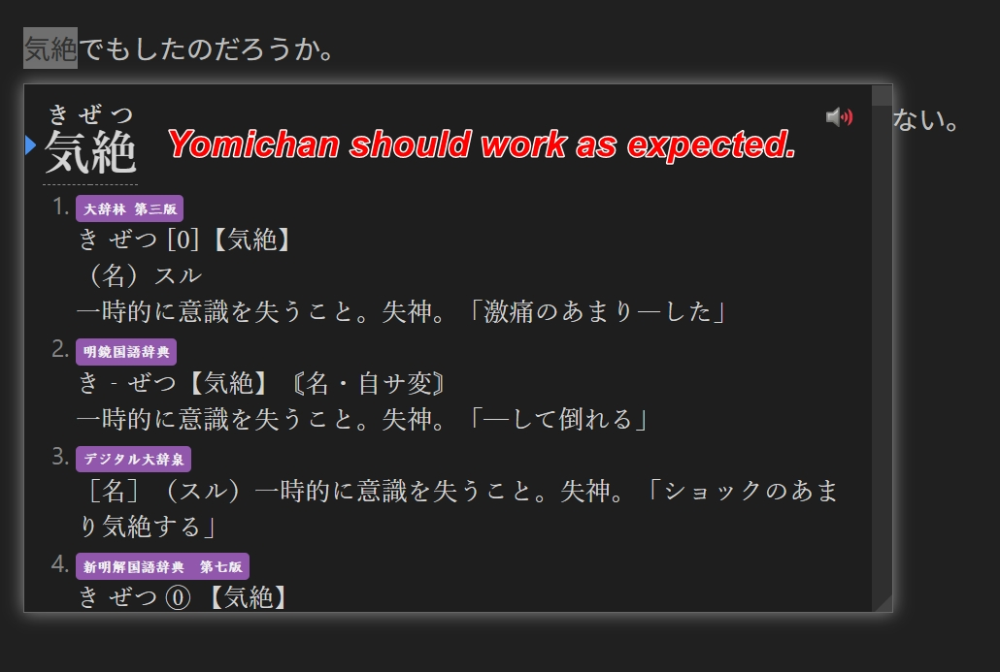
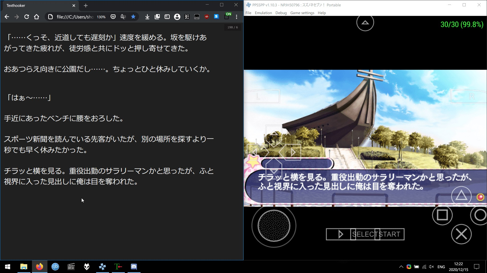

Visual Novel Guide¶
What are Visual Novels?¶
Visual Novels (often abbreviated as VN) can be described as sort of a mix of a novel and a game, they feature a text-based storyline and only little interaction of the player. Most VNs have anime-like sprites and visuals, and are usually accompanied by voice acting, background music and sound effects. Throughout the game, the player may be given choices, which will have an effect on how the story will play out, so if you play it a second time, with different choices, you may get an entirely different plot.

Why Visual Novels?¶
Reading Japanese is extremely important, but not everyone loves reading books, I am definitely one of them. I hate reading books, it’s way too often I get bored when reading a regular, text-only novel. I’m not much of a reader in English either. Oddly enough, I can read visual novels for hours without feeling fatigued. VNs have a mix of literary prose and conversational Japanese, so it’s perfect for reading immersion. For the people that hate reading, and even find manga boring, VNs might just be perfect for you.
{kind=link}
Downloading and setting up Visual Novels¶
Please refer to Cross Platform Visual Novel Setup for instructions on downloading and setting up Visual Novels for all platforms.
Looking up words in VNs using Yomichan and Textractor¶
Requirements:
Download Textractor (preferably the zip version)
Get Yomichan
Get Clipboard Inserter
Texthooking Page
A detailed Yomichan setup tutorial can be found here
For most applications, use the x86 executable of Textractor.
Steins;Gate
If you wish to hook Steins;Gate and Steins;Gate 0, please check out Steins;Gate Textractor
Launch your VN and Textractor and first remove all the unneeded extensions using the Del key.

Now we need to attach Textractor to your VN.

When it is attached, advance the text in the VN then cycle through the hooks to find the hook that matches the text displayed on the VN.

Now open your browser, head over to my texthooking page make sure Clipboard Inserter is installed and enabled and then advance the text in the VN again.

You can then just use Shift to use Yomichan.

All done! Enjoy the reading!! 
Use a walkthrough!¶
Playing a VN with a walkthrough is usually better than playing without one, because we wouldn’t want to get a bad ending.
You can find walkthroughs by searching “[vn name] 攻略” e.g. “Angel Beats! -1st Beat- 攻略”.
Unsure what to play?¶
Have a look at visual novel lists below
jamal's list
This infamous list
Dinuz's list
Have fun reading!
Consider joining our VN Club in the Discord!
Bonus: Using Textractor for PPSSPP Visual Novels¶
Hooking PPSSPP Visual Novels require you to use the x86 (32-bit) version of PPSSPP along with the x86 version of Textractor.
- Launch PPSSPP (32-bit)
- Launch the Visual Novel.
- Attach Textractor (x86) to PPSSPP (32-bit)
- Advance the text in the VN (O button)
- Using the "Search for hooks" feature, select "search for specific text"
- Search for the specific text that is on the PPSSPP VN. It needs to be exact.
- It will take a while to search for the hook, your emulator may start to lag for a while.
- If Textractor asks, (keep an eye on the Console) frantically advance the text (O button) on the PPSSPP VN.
- Now it will have found the hook.
- Advance the text once more (O button)
- Cycle through the hooks to see which hook has the newly advanced text.
- That's it!
 You could save the hook to make the process more convenient later.
You could save the hook to make the process more convenient later.
Proof of texthooking working with PPSSPP:
